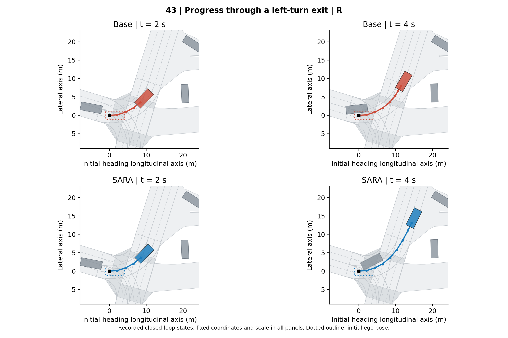
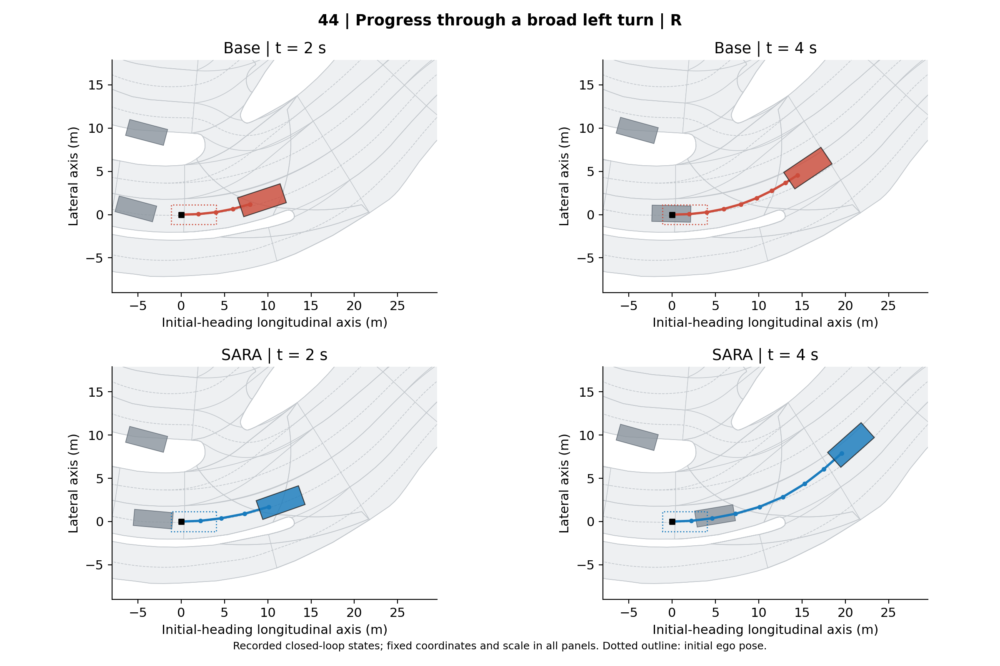
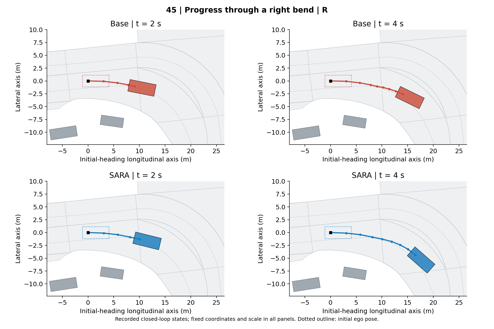
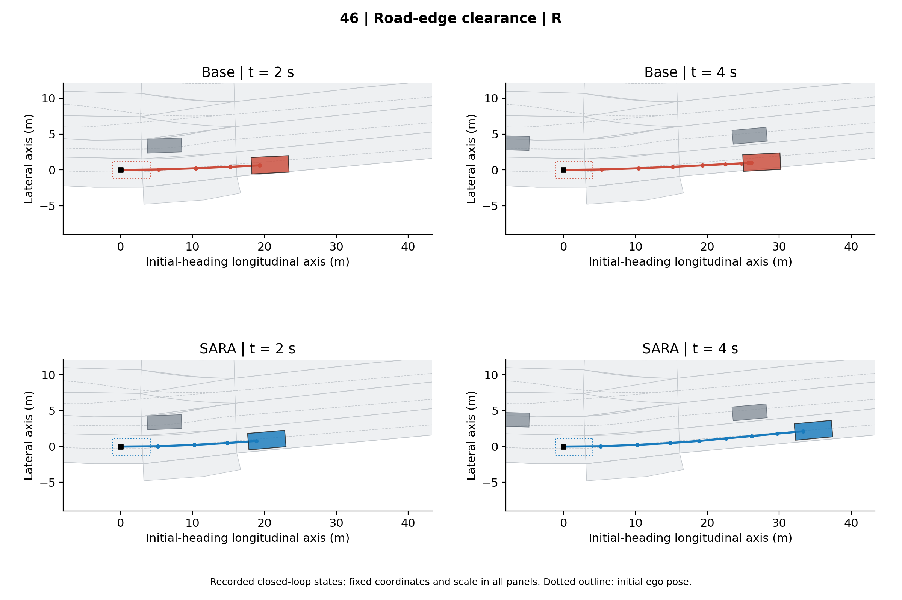

先看 43、44；46 为车道保持备选；45 优势较弱。上排 Base、下排 SARA；左列 2 秒、右列 4 秒。四例均不依赖碰撞分数差异，结论限于四秒采样。
两种模型前 2 秒的左转轨迹非常接近；后半段 Base 逐步降到约 1.0 m/s，SARA 沿左转出口多推进约 5.9 m，4 秒速度约 3.1 m/s。EP 0.695→0.966。这是本轮较值得先看的候选，但不能仅凭画面判断 Base 减速的内部原因；SARA 最后半秒也在减速，不能据此保证后续持续通行。

两者都按左转方向行驶，SARA 在宽路口内完成更多转向与推进，四秒行程约 15.4→21.7 m。EP 0.919→1.000。场景转弯意图清楚、速度适中，但 Base 本身并没有明显失败，适合作为转弯推进的备选。

两条路径几乎一致，SARA 在右弯内保留更多推进，四秒行程约 14.5→17.4 m，EP 0.643→0.772。它主要体现速度规划与推进差异，Base 减速也可能合理，因此优先级低，不建议写成“Base 错误决策”。

桥面道路边缘附近，Base 后段更贴近地图边界，SARA 留在车道内。正式 DAC 0→1；辅助车身同向车道覆盖最低约 90.7%→100%，未检出普通对向车道重叠。等行程轨迹偏移最大约 0.44 m，差异较细，不能描述成明显冲出道路。Base 实际走了约 26.1 m，EP=0 不代表停车。
